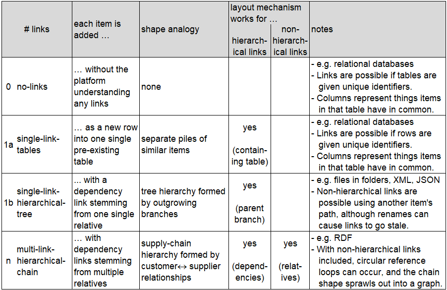
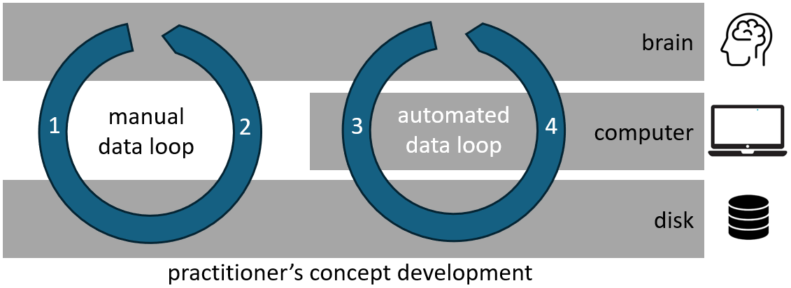

Killer App for the Semantic Web🔗
Introduction🔗
The semantic web is a coherent and promising vision for repairing the traditional web. In an age where various aspects of the traditional web have become intrusive and socio-economically subversive, and AI now threatens to accelerate this trend alarmingly, many socially minded technologists see the semantic web as a last hope. To realise the vision, a progressive sequence of determined initiatives and enterprises including linked data, the Solid project and Inrupt have inspired investment from many areas; sadly, however, progress has been slow and despite a period of encouraging growth in interest around the turn of the decade, the investments of time and money remain small. Some possible reasons for this are proposed.
One obvious reason is that there is no inevitable demand. With the traditional web, demand was a given : people with information to share were bound to try out the world's first standardised sharing platform. With the semantic web things are different because the traditional web already provides a more established and easier alternative.
A second reason is that the semantic web is subject to a mutual dependency somewhat like the chicken and egg dilemma : investment-in-infrastructure follows demand-from-customers, and demand-from-customers follows investment-in-infrastructure. To reach a critical mass it has been suggested that the semantic web needs a killer application.
A third reason is impenetrability; the semantic web promises to make web data easier to understand by storing structural information along with data. The promise has been presented as making data easier to understand for computers, but in addition there are big benefits from making data easier to search and interpret by humans too. Ironically, however, the nascent infrastructure of the semantic web has a counter-productive reputation for being hard to understand.
The reasons above are considered from the perspective of two different types of coder. Several separate technical concepts are discussed and then drawn together in the conclusion, where the possibility of targeting the end-user more directly is proposed.
This document is published using MkDocs to convert simple markdown text files into HTML. It may be edited in response to comments and discussion witin the community 1 so the latest web page may be different to this version on GitHub.
Mutual Dependency between Practitioners and Coders🔗
Advocates for the semantic web anticipate that the new technology for sharing structured information might grow along a similar course to the one which saw the growth of the traditional web for less-structured information. The first time around professional coders in commercial organisations built on the public standards, and created tools for practitioners to share information for the first time in a consistent way. The term "practitioner" 2 (i.e. user) is introduced here to describe the people to whom the information-to-be-shared has practical value; in other words the people who represent the "demand-from-customers" in the introduction. In short : the growth of the traditional web was shaped by a mutual dependency between practitioner and coder.
The growth of the semantic web must similarly shaped by a mutual dependency between practitioner and coder, and this time around practitioners who need convincing can be divided into three categories :
- Those whose information exists and is already shared on the traditional less-structured web.
- Those whose information exists but is not shared, and is likely stored somewhere more structured than the web.
- Those whose information does not yet exist.
Those in the category 1 need convincing that the semantic web is a better way to share. Those in the categories 2 & 3 need convincing that putting their data into the semantic web won't compromise its structure. Either way the prospective semantic web practitioner needs convincing away from functioning alternatives, which is different to the traditional web where sharing was made possible for the first time.
The ecosystem of interdependent tools and components was also shallower in the 90s : open-source tools were not the norm and coders were accustomed to buying a few tools from a limited range of providers. Today, in contrast, coders need to choose and combine multiple tools form a dizzying variety of largely open-source providers. The tools are more powerful and sophisticated and can be connected together more reliably in a deeper ecosystem, but the consequent increase in complexity has led to the emergence of the data-specialist role to bridge the increasing gap between coders and practitioners.
In summary :
- The mutual dependency between practitioners and coders was stronger and closer during the creation of the traditional HTML web, when there was no choice.
The dependency is made weaker in the context of the semantic web by the option for practitioners to stick with functioning alternatives. The dependency is also made more distant, with reduced mutual understanding, by the increase in complexity and the positioning of data-specialists in between practitioners and coders. The next section discusses this reduction in mutual understanding in more detail, and how it can undermine mutual dependency.
Practitioner's Understanding of Coders🔗
Back in the 90s it wasn't unusual for practitioners, with information they wanted to store, manipulate and possibly share, to experiment with using coding tools themselves with an initial view towards creating a quick pilot study around their information and, depending on how it looks, a subsequent view towards the possibility of commissioning the development of an application. A really simple place to start was often a spreadsheet; but storing information in cells makes it more convenient for manual access and less convenient for automated access. Practitioners seeking a more structured and automation-friendly basis for storage could turn to products such as MS Access which integrates a relational database with an environment that supports basic coding, both together in a single platform which supports intuitive learning for the practitioner with the business need.
Relational databases are a type of storage which offer read and write access through a structured querying language (SQL) which is designed to provide a standardised interface that's usable by humans and algorithms alike. In the 90s, however, it was expensive and complicated to install and maintain a production-grade SQL server, and MS Access was aimed at giving non-specialists a practical route into understanding and experimenting with the kind of tools software specialists use.
The burden of installing and maintaining a production-grade storage server today is much lighter. In some ways this removes the need for integrated products like MS Access since it is now realistic, at least in theory, for practitioners to just use the same tools that professionals use. In practice however nothing has replaced the convenient integrated learning platform. The practitioner today, seeking a more structured and automation-friendly alternative to their preliminary experimentation with a spreadsheet, is faced with an overwhelming range of sophisticated and powerful options and there's no central source of learning to guide them through the choice.
Although the various options for storage platforms generally include good introductory material, backed up by confident, knowledgeable and independent advocates, learning how to use each one is time-consuming. The knowledgeable voices have also been joined recently by those of vibe coders, empowered by AI to make rapid progress implementing ideas with a low requirement for knowledge. Without personal experience it can be hard to put all the opinions and options into context and it can feel risky, from the perspective of a practitioner with existing valuable data, to consider moving the data into unfamiliar storage platform just in order to experiment with automation.
The semantic web, and in particular the Resource Description Framework RDF, is pitched as a storage platform for sharable structured data. From a practitioner's perspective, however, the second part (structure) may be more important than the first (shareability). Perhaps RDF could be pitched to practitioners instead as a storage platform for structured data which supports convenient querying by humans and algorithms alike, and has a secondary benefit of being shareable.

In summary :
- The emergence of open-source low-maintenance services and tools has coincided with a reduction in tools aimed at supporting practitioners (i.e. non-software-specialists) who wish to experiment with software development.
- For practitioners whose data would be welcomed into the semantic web, structure will necessarily be important and RDF is just one difficult-to-understand option among many.
The next section discusses the nature of structure in the practitioner's mind.
Mind, Display & Storage : Three Models for Three Mediums🔗
All useable software has a purpose and exposes an intelligible interface; with the purpose being evident within internal models, and the interface allowing practitioners (i.e. users) to build a corresponding mental model. The user interface (UI) is a logical layout, structured in space and/or time 3, which we could call a display model, and which gets communicated to and influences the user's mental model. In many cases there may also be a third model for storing information between sessions, and the user may or may not expect to have open access to the storage model. These three models are effectively the information structures in each of the three mediums. In the context of this document about the semantic web we are interested in cases where storage exists and is open.
| # | medium | info structure | |
|---|---|---|---|
| 1 | user's brain | mental model | |
| 2 | computer app | coding model layers |  |
| 3 | disk | storage model |
Focus on Open Storage Models🔗
Storage may be described as "open" if the user expects to be able to see and understand the stored data directly, i.e. independently from the UI. The user's mental model will always be shaped by the UI display model(s), and in cases where storage exists and is open then it will likely be shaped by that too. In simple cases there may be three-way commonality between the mental, display & storage models, but in more complex cases it is usual for the coding model to be made up from layers with the top layer defining the display model and the bottom layer relating to the storage model.
A few different logical mechanisms are possible for linking items in a storage facility in preparation for accepting new information : 
Platforms exemplifying each of these linking mechanisms include :
| example platform | link mechanism | open storage model type | |
|---|---|---|---|
| text file editing | no-links | characters on page | |
| writing on paper | no-links | characters on page | |
| MS-Excel | no-links | cells in worksheets | |
| MS-Access | single-link | records in tables | |
| open data files | single-link | shared scheme for decoding text or bytes | |
| SQL queryable databases | single-link | records in tables | |
| NoSQL queryable databases | single-link | dictionary of {name, value} pairs | |
| object databases | single-link | deserializable objects | |
| SPARQL queryable endpoint | multi-link | RDF |
Storage may be described as "closed" if the user expects to access the information through a UI from a single provider (notwithstanding an increasing user expectation to be able to export data from one provider's UI into another). The app provider has exclusive access to the storage and the user's mental model is shaped by the display model(s) only. Examples include MS-Word, MS-Powerpoint, SAP applications and web applications, but in the context of this document about the semantic web we aren't interested in closed storage so it isn't discussed further.
Different storage platforms have different suitabilities for representing different information structures. The support for multiple links in the RDF storage platform makes it particularly suitable for representing the information structure of coding models. The next section discusses some differences between explicit and implicit information structure.

In summary :
- RDF is one of several platforms which can be used to structure stored information and shape mental and/or coding models.
- RDF is the only storage platform supporting hierarchical structure with mutiple links, making it particularly suitable for representing the structure of coding models.
Explicit Structure Is Preferable to Implicit🔗
Coders are faced with various structural choices which can seem opposing :
- choice of language can be strongly or weakly typed
- choice of strongly typed language can be statically or dynamically typed
- choice of database can be SQL/schema or NoSQL/schemaless
- choice of state can be common or variable
A pattern appears in this list of choices, with the items on the left favouring explicit structure that's enforced according to a common declaration somewhere central to the code, and the items on the right favouring structure that's not so rigidly enforced but nevertheless remains subject to implicit structure expressed in scattered snippets across the codebase.
Apart from exceptional cases where implicit structure can work better, explicit structure is generally an easier way to work because it supports the formation of a stable mental model for coding. Explicit data structures in the coding model are generally represented as type definitions, either object-oriented reference types (class definitions) or value types (struct definitions). Explicit data structures in a relational database storage model are represented as table definitions. When using explicit data structures in both the coding model and the storage model it can seem excessive to be representing dual similar or identical structures separately in both the coding and storage models, and so tools and platforms exist to address this issue. For example object-relational mapping (ORM) tools can automatically map explicit type definitions in the appropriate coding model layers to corresponding explicit table definitions in a relational database. Alternatively object databases can be used to allow the database to leverage type definitions in the coding model. Either way the need for coders to coordinate dual explicit structure mappings manually is reduced or removed.
From the perspective of a practitioner with existing valuable data who wishes to experiment with coding : explicit structure can be conceptually helpful. For example with MS-Access the act of structuring relational database tables, if applicable to the data, reduces the mental burden of keeping track of all the intended fields and types. In contrast, however, the coding model, which is based on Microsoft's VBA language, offers limited options for explicit structure and there is no scope for using ORM tools. In this way a practitioner's choice to use MS-Access would effectively favour placing explicit structure in the storage model over placing it in the coding model. An alternative choice might be to experiment with a strongly typed language, such as Python or C#, to introduce explicit structure into the coding model. The latter choice, however, would require a separate choice to be made for data storage, and having to choose two possible new platforms to experiment with and combine is less realistic than choosing one.

In summary :
- Whether in the storage model or the coding models or both, explicit structure can help a practitioner to experiment with building automation around their information, but ...
- ... other than MS-Access, which exists from a different era, there is a lack of single platforms aimed at supporting practitioners by offering a ready-made combination of storage and coding.
Conclusion🔗
Query languages generally support a flexible way to interface with stored data. This is appealing for practitioners with existing data, who are looking to add structure to it and to explore ideas for developing one or more applications to interface with it. The integrated development tool MS-Access was (and is) aimed at helping practitioners to use SQL. It might help if a similar integrated development tool was available for SPARQL. Instead of basing the tool on a proprietary language like Visual Basic, the SPARQL tool might leverage one or more popular open source languages which include superior support for explicit structure.

- Enter or modify data manually using query language.
- View data manually using query language.
- Enter or modify data via application.
- View data via application.
The future of the open semantic web depends on practitioners seeing value in using RDF to store their information. This is currently unlikely to happen, despite there being real value in using RDF to share their information, and there being as much if not more value in using RDF to structure it.
Practitioners for whom sharing is more important are likely to have already shared their information on the traditional web. Those for whom structuring is more important are likely to choose more established storage alternatives which allow faster and easier progress. Although the capabilities offered by the semantic web for structuring information as RDF are more sophisticated than those offered by relational databases, they are in consequence also more challenging. In short the opportunities available to practitioners via RDF are getting missed because it's unrealistic for them to piece together all the complicated building blocks.
If practitioners make the structure of their information explicit at all it is more likely to be within a coding model than within RDF. From this starting point an RDF tool offering similar functionality to ORM tools for relational databases might help. Such a tool could use explicit structure from the coding model to configure and manage RDF storage which reflected the same structure, thus piecing together the building blocks on behalf of the practitioner.
This article has been written to invite discussion. Thank you for reading and, if you have time, please consider sharing your thoughts using one of the discussion links !
-
Discussion links : solidproject, Hacker News ↩
-
The word "practitioner" can mean different things in different contexts. It is employed here in the sense of the merriam-webster definition : "one who practices or is regularly engaged in a skillful activity", and in particular here one who is engaged in the practical application of something developed by software specialists. It it employed in place of the word "user" to reduce the risk of implying passivity or inferiority. ↩
-
The logical layout can be either a graphical-user-interface (GUI), structured within a space on the screen and displayed via a platform equipped to cope with asynchronous graphical events, or a callable interface (CLI or API) which allows structured inputs to be passed in synchronously or asynchronously. Either way the structure of the interface constitutes an information model exposed to the user. ↩